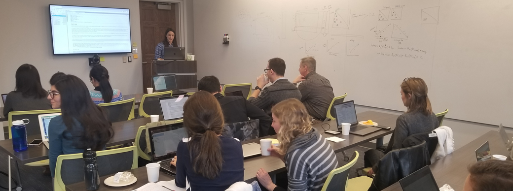

Workshops
A few times per semester, trainees or invited faculty (internal or external) will lead a demonstration or hands-on workshop on a method used in cognitive neuroscience and neuroimaging. Typically, these are paired with our journal club topics to continue discussions and broaden insight.
September 20, 2021
Jupyter/Executable Notebooks
[Materials] [Executable Book Template] [Code]
 Shawn Rhoads 📢💻✅🤔 |
November 2, 2020
Primer on Bayes
 Plamen Nikolov 📢✅🤔 |
September 21, 2020
Omics, RNA-Seq, and Principal Component Analysis
George Melchor 📢💻✅🤔 |
March 2, 2020
Introduction to Representational Similarity Analysis
 Sri Damera 📢💻✅📋🤔 |
Shawn Rhoads 📢💻✅📋🤔🔍 |
December 6, 2019
Workshop on Connectome-based Predictive Modeling
 Emily Finn 📢💻✅🤔 |
Shawn Rhoads 📋🔍 |
October 21, 2019
Introduction to Non-Parametric Statistics in fMRI
Sri Damera 📢💻✅🤔 |
 Marissa Laws 📋🤔 |
March 28, 2019
Introduction to Python
Sri Damera 📢💻✅🤔 |
 Katherine O'Connell 📢💻✅🤔 |
Shawn Rhoads 📢💻✅📋🤔🔍 |
The above follows the all-contributors specification (see emoji key).